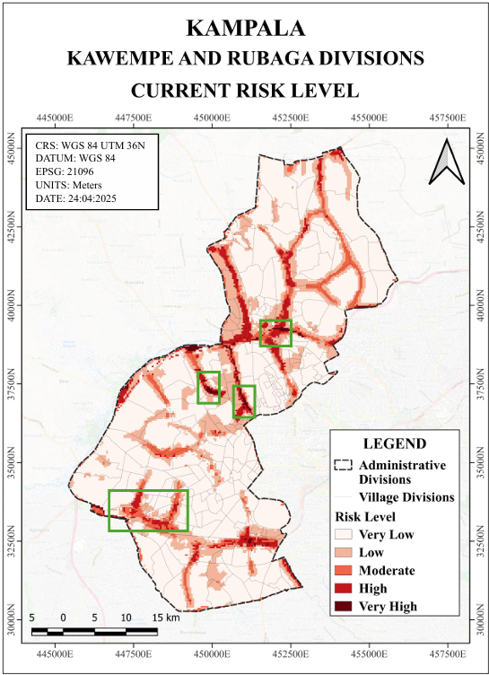

Current risk
Integrating flood hazard, exposure, and vulnerability into a spatial risk assessment.
This project assessed current and future flood risk in Rubaga and Kawempe, two rapidly urbanising divisions of Kampala, Uganda. GIS-based spatial analysis was used to examine how flood hazard, urban exposure, and vulnerability interact across the city.
Future urban-growth scenarios were then incorporated into the assessment to explore how continued development could reshape flood exposure and risk, supporting the identification of priority areas for mitigation and resilient urban planning.

Flood risk is shaped by more than the location of a floodplain. Understanding where people and buildings are exposed, how vulnerable those areas are, and how future urban growth may change those relationships is essential for risk-sensitive planning.
Integrating flood hazard, exposure, and vulnerability into a spatial risk assessment.
Testing how Trend Growth and Hyper Growth could alter future exposure and flood risk.
Connecting mapped high-risk areas with spatial and non-spatial mitigation strategies.

The study focused on Rubaga and Kawempe within Kampala, Uganda. Both divisions contain dense urban development, informal settlements, low-lying areas, and drainage infrastructure that can become overwhelmed during intense rainfall.
Exposure was analysed using indicators representing the spatial concentration of development and its relationship with flood-prone infrastructure and locations.
Areas where limited infrastructure and settlement conditions increase potential flood exposure.
The proportion of developed land within each analysis grid cell.
Distance from drainage infrastructure used to identify areas where exposure may intensify near flood-prone corridors.
A 50-metre grid was used to capture local variation in settlement density, built-up area, and proximity to drainage infrastructure while maintaining a consistent spatial unit for analysis.
Flood risk was assessed by combining three spatial components: vulnerability, hazard, and exposure.
Social and physical conditions influencing the ability of urban areas and communities to withstand flooding.
Spatial flood zones derived from 10-year and 100-year flood return-period scenarios.
Buildings, informal settlements, and urban development located within potentially flood-affected areas.
An integrated spatial representation of where damaging flood impacts are most likely to occur.
Two development scenarios were used to explore how different levels of urban expansion could influence future exposure and risk.


Projected built-up growth was translated into future exposure maps, allowing the effect of different development trajectories to be compared spatially.


Comparing current conditions with the two future growth scenarios reveals how continued urban development can reshape the spatial distribution of flood risk.

Scenerio 1.png)
Scenerio_2.png)
Future risk patterns show how continued urban expansion can increase the number of developed areas located within flood-prone zones, making urban-growth management an important part of flood-risk reduction.
The risk assessment was used to identify locations where existing flood exposure, drainage conditions, urban density, and future development pressure make targeted intervention especially important.
High-risk locations include areas such as Nalukolongo and Lunguja, where spatial mitigation can be combined with planning and community-based measures.

The spatial assessment was connected to a combination of location-based interventions and broader planning measures aimed at reducing exposure and improving long-term urban resilience.
The project demonstrated that urban flood risk is shaped not only by where flooding occurs, but by where development, infrastructure, and vulnerable communities are located. Scenario-based spatial modelling showed how continued urban expansion can alter future exposure, reinforcing the need to connect GIS-based risk assessment with integrated planning, nature-based solutions, and long-term urban resilience.